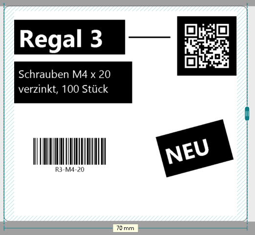
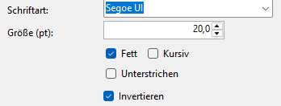
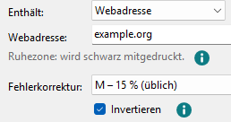

Weiß auf Schwarz für Text und QR-Codes
Grafiktext, Mengentext, QR-Codes und Bilder drucken Sie mit dem Häkchen Invertieren weiß auf schwarz. Gedruckt wird genau, was die Zeichenfläche zeigt.

-
Grafiktext und Mengentext
Klicken Sie den Text an und setzen Sie rechts das Häkchen Invertieren, unter Fett, Kursiv und Unterstrichen.

Der Text steht dann weiß in einem schwarzen Kasten, 1 mm größer als sein Rahmen. Drehen Sie den Text, dreht der Kasten mit. Die Auswahl ist auf dem Kasten hell gestrichelt.
-
QR-Codes
Beim QR-Code steht Invertieren unter Fehlerkorrektur. Die Punkte des Codes werden weiß auf schwarz, und die Ruhezone um den Code wird schwarz mitgedruckt; das sagt auch die Zeile unter dem Inhalt.

Die Norm erlaubt weiß auf schwarz. Handy-Kameras lesen es meist, ältere oder einfache Scanner oft nicht. Im Zweifel testen.
-
Bilder
Bei Bildern tauscht Invertieren Schwarz und Weiß im Bild selbst, ohne Kasten. Mehr dazu unter Bilder.